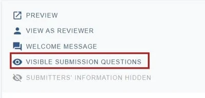
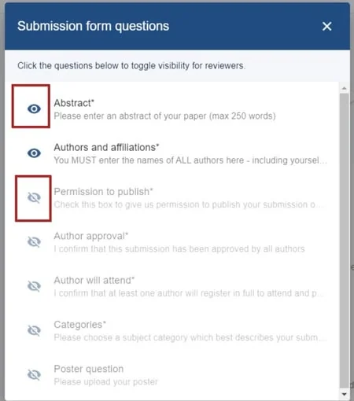
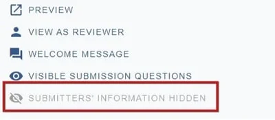
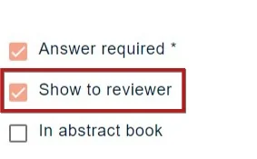
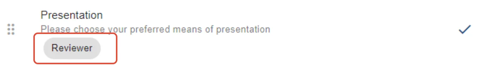

Controlling what the reviewer can see
For event organisersNot an organiser?
You can determine which questions' responses will be visible to the reviewer, along with the submitters' individual information (eg. name and email address).#
Skip to written instructions.
Go to Event dashboard → Abstract Management → Reviews → Forms & Setup
At the top of the screen, choose Visible submission questions

Click the eye icon to toggle visibility on and off to your requirements. Changes are saved automatically.

This can also be set up in the submission form. See below.
Double blind review settings
At the bottom of the settings, you will see that the default is for submitters' information to be hidden from reviewers. If you would like this information to be visible to reviewers, click on the eye icon.

Go to Event dashboard → Form → Submission form
Click on any question. On each question you can apply 'tags'.
Click the Show reviewer checkbox at the bottom of the screen if you would like the responses of this question to be shown to the reviewers. All changes are saved automatically.

When back in the submission form edit view, you will see the Reviewer tag under the question.


Common questions#
How do I control what data the reviewer can view in the submissions?#
See Question tags.
Didn't solve it? Ask our support team
No question is too small, and there's no charge for asking. Raise a ticket and someone who knows the software will pick it up.
Did this page solve it?
Thanks — this helps us fix it.